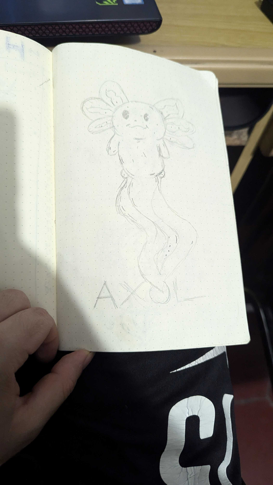
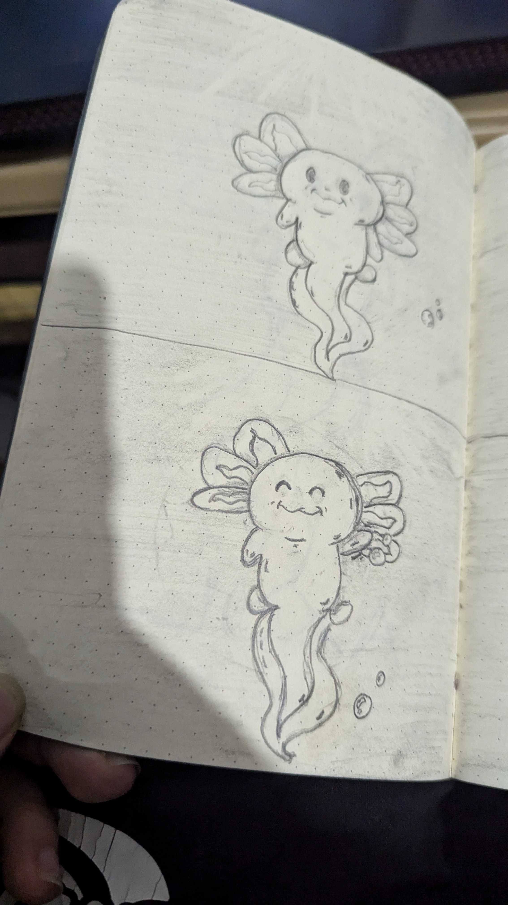
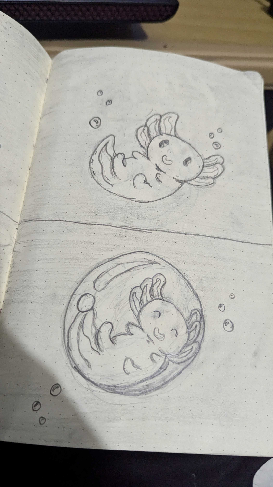
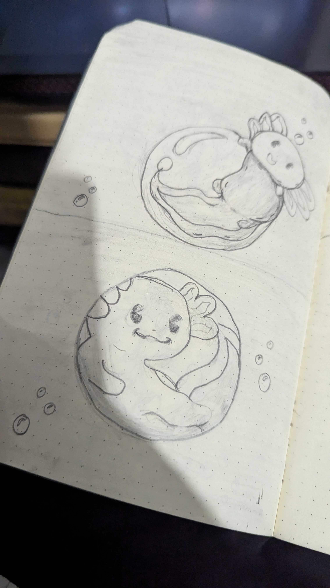
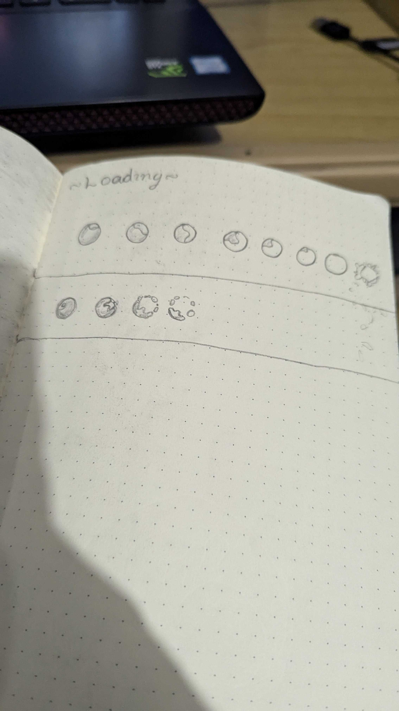
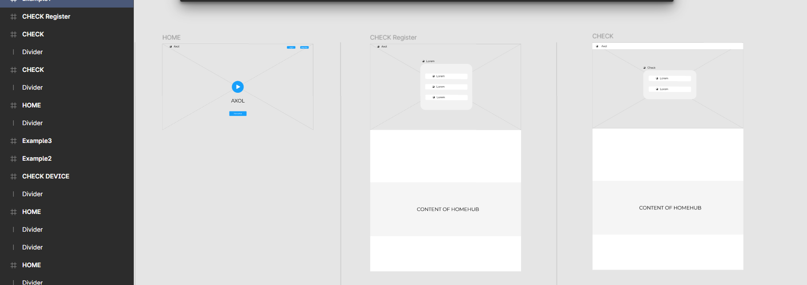
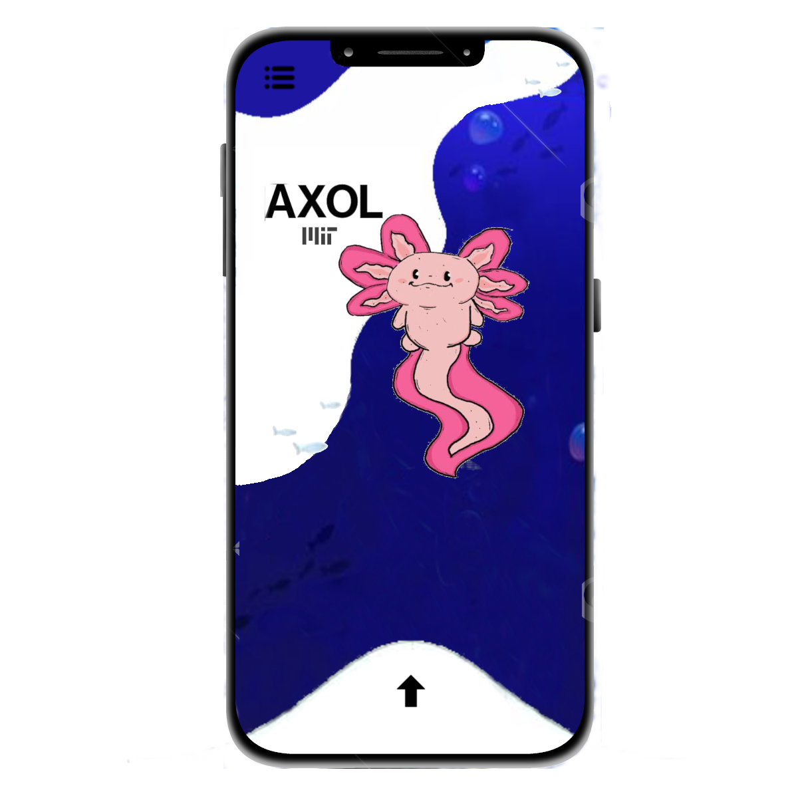
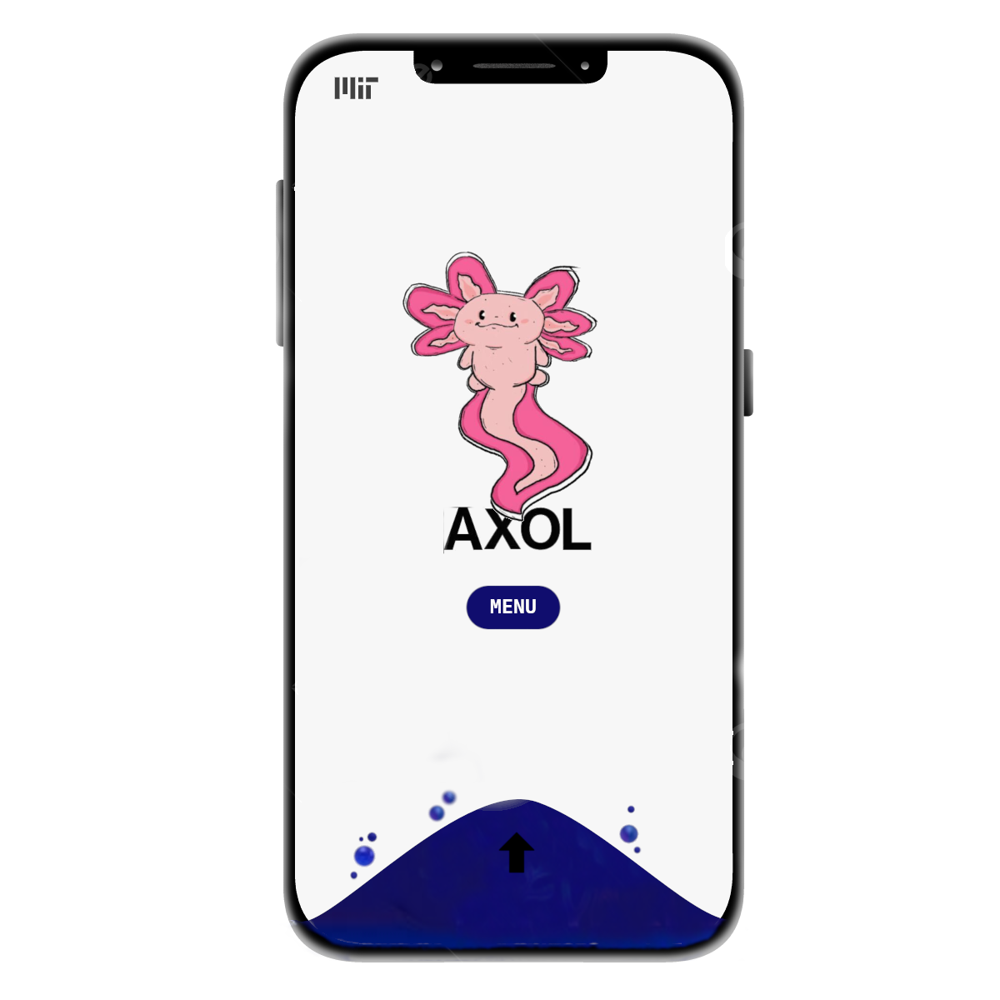
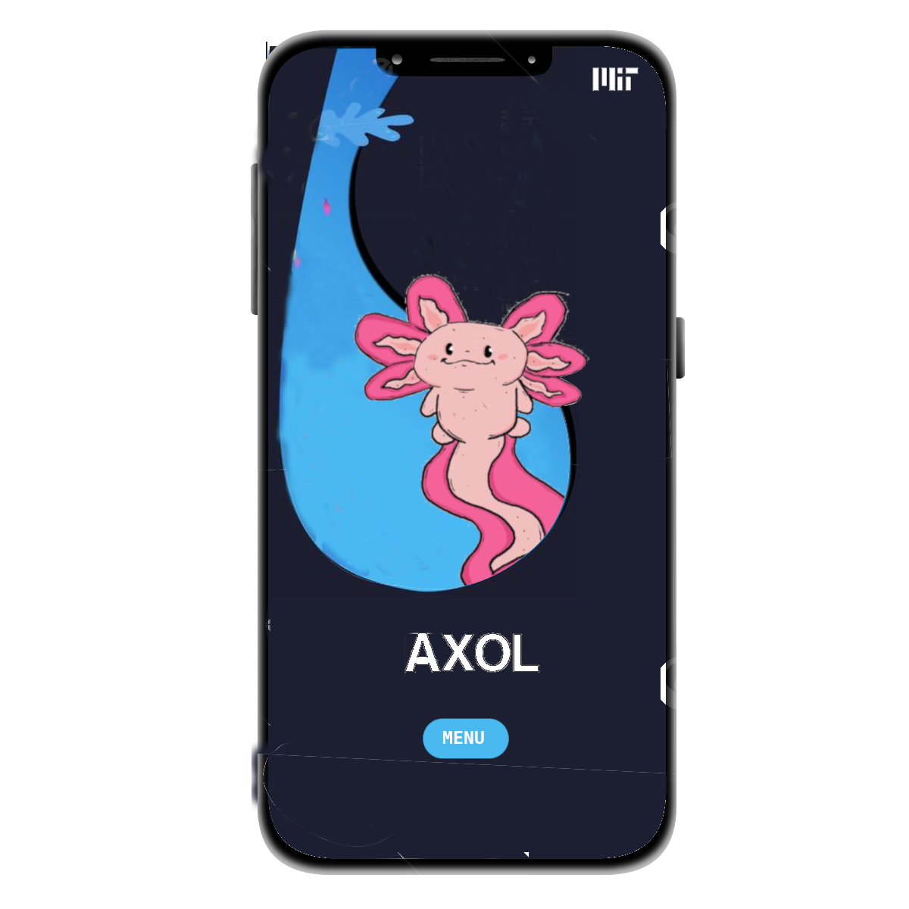

AXOL
you will find all my way and my process helping in the project AXOL.
AXOL is a sensor system for monitoring water consumption and quality in marginalized communities. A project in collaboration with the Massachusetts Institute of Technology (MIT Media Lab). In Mexico, between 12.5 and 15 million people lack adequate access to safe drinking water, while about 30% of those who do have access do not receive sufficient quality water. In Latin America, according to the Economic Commission for Latin America and the Caribbean (ECLAC), it is estimated that it would be necessary to invest 1.3% of the regional GDP over ten years to achieve universal coverage of safe water and sanitation. In response to this situation, MIT and the University of Guadalajara have developed a network of low-cost, open source sensors to measure the quality, quantity and use of water in homes, with the aim of improving water management in disadvantaged communities.
What is my position?
In this project with my partner Daniela and me, i will show you all our way in UX/UI, what is the process and all our documentation
Sketches





Brainstorming

Information Architecture
Wireframes

Mockups


